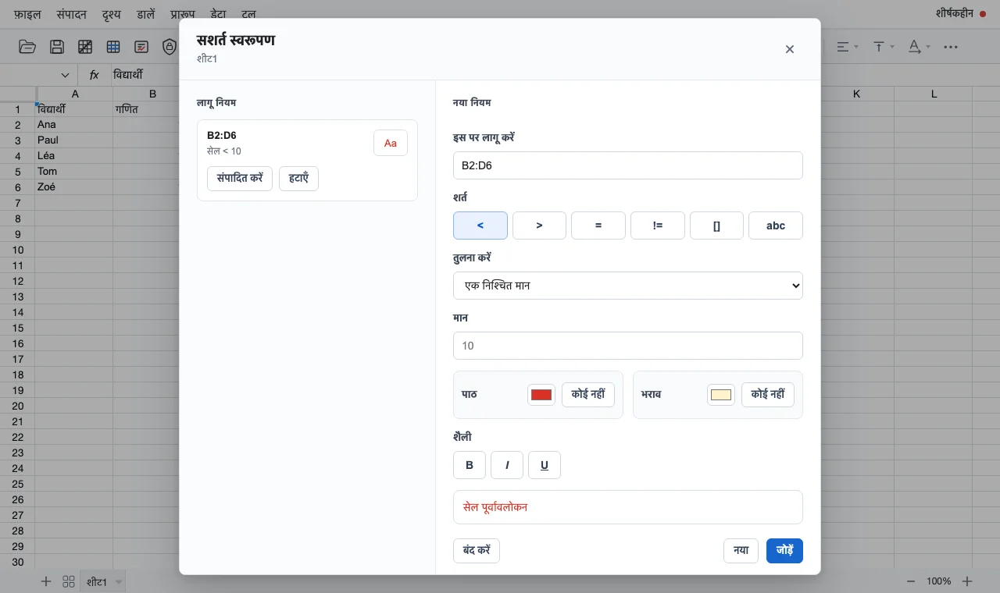

सशर्त स्वरूपण
नियम किसी रेंज के शर्त पूरी करने वाले सेलों का रूप बदलता है। वह लिखे और गिने गए मानों के साथ चलता है।
नियम बनाना
- रेंज चुनें, शीर्षक के बिना।
- या प्रारूप › सशर्त स्वरूपण।
- शर्त, तुलना का मान, रंग या शैली चुनें।
- जोड़ें।

| शर्त | सेल |
|---|---|
< | से छोटा है |
> | से बड़ा है |
= | के बराबर है |
!= | से भिन्न है |
[] | दो मानों के बीच है, सीमाओं सहित |
abc | में टेक्स्ट है, छोटे-बड़े अक्षर समान |
किससे तुलना
| तुलना करें | उदाहरण |
|---|---|
| एक निश्चित मान | 10 से कम अंक |
| एक निश्चित सेल | F1 में लिखी सीमा से कम अंक |
| उसी पंक्ति का स्तंभ | कॉलम C में, पंक्ति दर पंक्ति, कॉलम B से बड़े मान |
रूप
पाठ और भराव रंग चुनते हैं, कोई नहीं उन्हें हटाता है; B, I, U बोल्ड, इटैलिक, रेखांकित करते हैं। कम से कम एक रंग या शैली चाहिए।
कई नियम
बायाँ कॉलम शीट के नियम दिखाता है: संपादित करें, हटाएँ। किसी सेल पर कई नियम लगें तो सूची का अंतिम नियम, रंग दर रंग, मान्य होता है।
नियम वाली रेंज में सेलों को सीधे दिए गए टेक्स्ट और पृष्ठभूमि रंग नहीं दिखते।
नियम Excel फ़ाइल में Excel के सशर्त स्वरूपण के रूप में सहेजे जाते हैं।